Освоить настройку прав доступа пользователей к ресурсам сети с
использованием списков управления доступом (ACL) на маршрутизаторе
Cisco. Научиться фильтровать трафик на основе протоколов, портов и
IP-адресов, а также предоставлять расширенные привилегии администратору
сети.
Топология сети
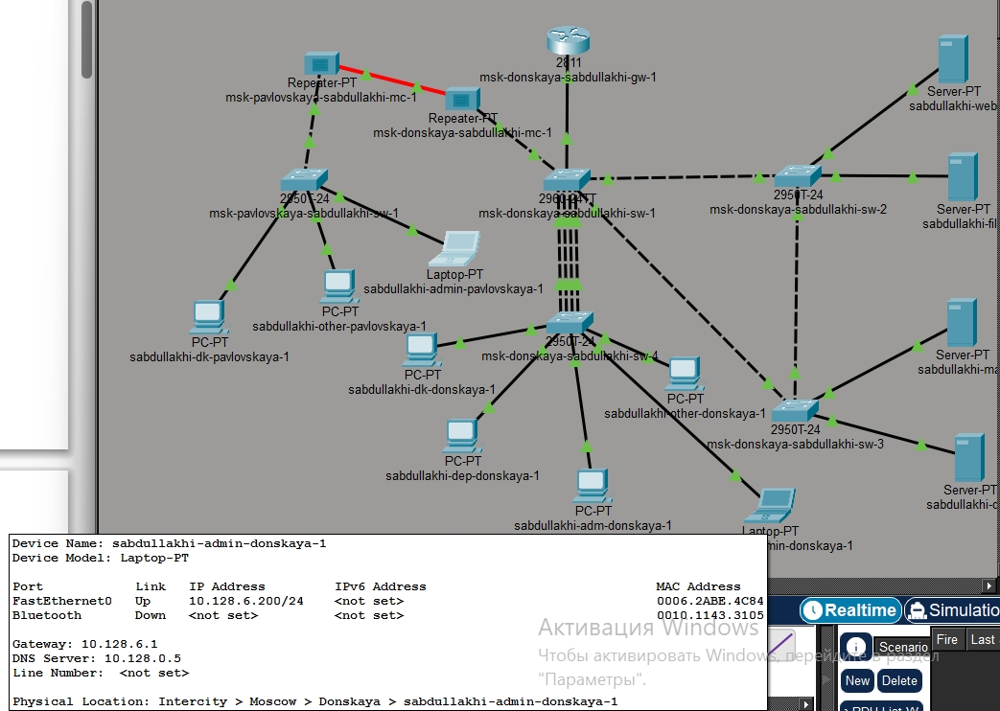
Топология сети
Настройка IP-адреса
администратора
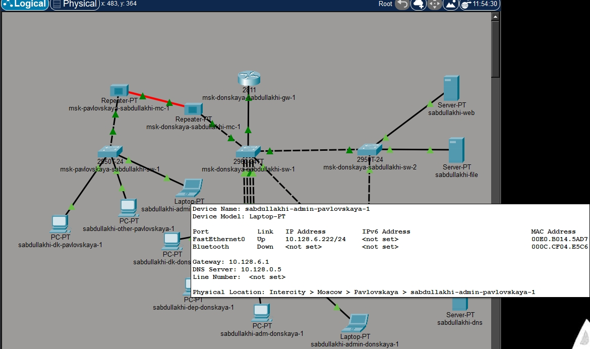
Настройка IP-адреса
администратора
Создание ACL для web-доступа
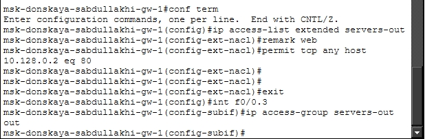
Создание ACL для web-доступа
Применение ACL к интерфейсу
Список доступа servers-out был применён к интерфейсу
FastEthernet0/0.3 (субинтерфейс, ведущий к серверной
ферме) для исходящего трафика (out). Это
означает, что правила проверяются для пакетов, покидающих маршрутизатор
через этот интерфейс.
Проверка HTTP-доступа (успех)
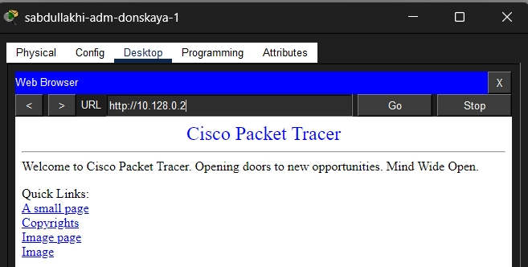
Проверка HTTP-доступа
Проверка ping до сервера
(неудача)
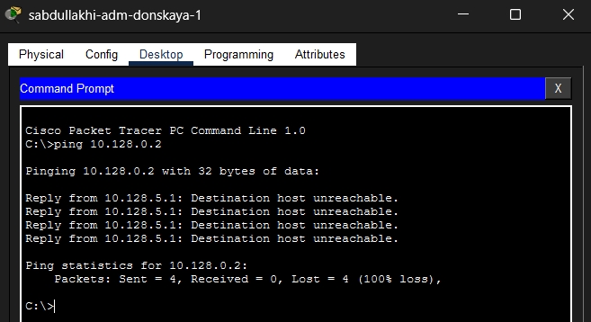
Проверка ping до сервера
Добавление правил для
администратора
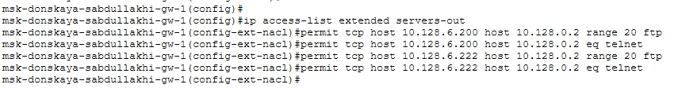
Добавление правил для
администратора
Успешное
FTP-подключение администратора
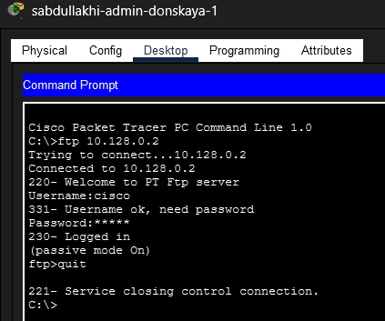
Успешное FTP-подключение
администратора
Успешное
FTP-подключение администратора
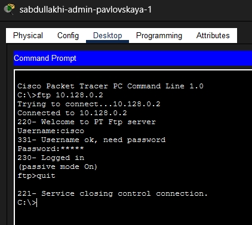
Успешное FTP-подключение
администратора
Запрет FTP-доступа
для других пользователей
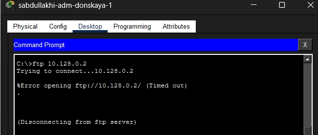
Запрет FTP-доступа для других
пользователей
Настройка ACL для файлового
сервера
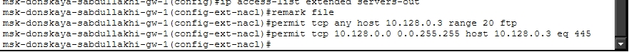
Настройка ACL для файлового
сервера
Проверка FTP-доступа к
файловому серверу
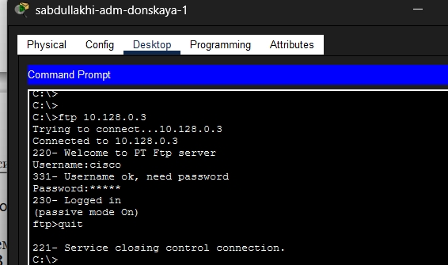
Проверка FTP-доступа к файловому
серверу
Настройка ACL для mail, DNS и
ICMP
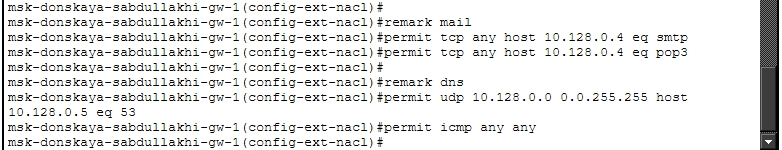
Настройка ACL для mail, DNS и
ICMP
Проверка доступа к
web-серверу по имени
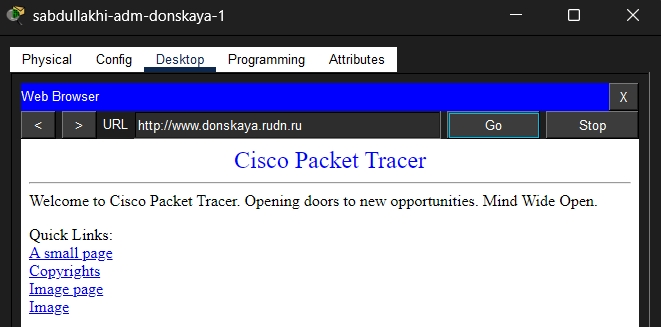
Проверка доступа к web-серверу по
имени
Проверка работы почтового
сервера
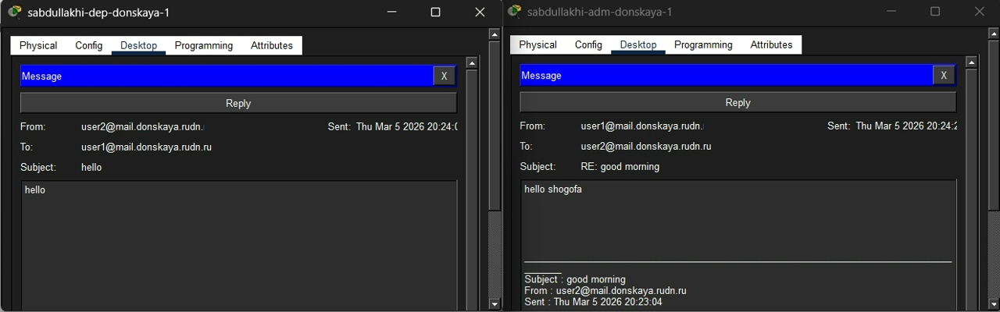
Проверка работы почтового
сервера
Проверка ICMP-доступа
после изменения ACL
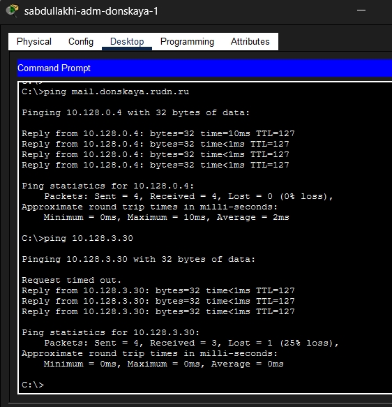
Проверка ICMP-доступа после изменения
ACL
Настройка доступа к
сети управления (SSH)
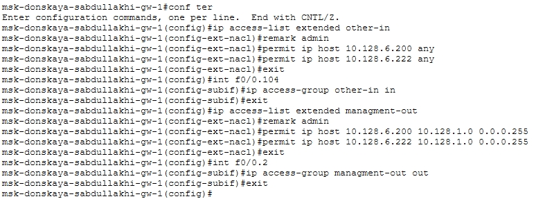
Настройка доступа к сети управления
(SSH)
Проверка
SSH-доступа к маршрутизатору и коммутаторам
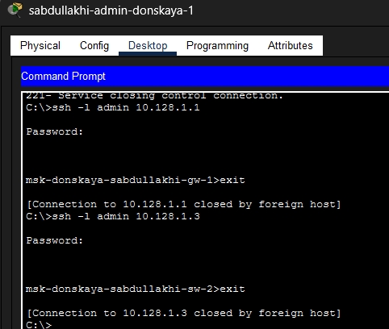
Проверка SSH-доступа
Проверка
SSH-доступа к маршрутизатору и коммутаторам
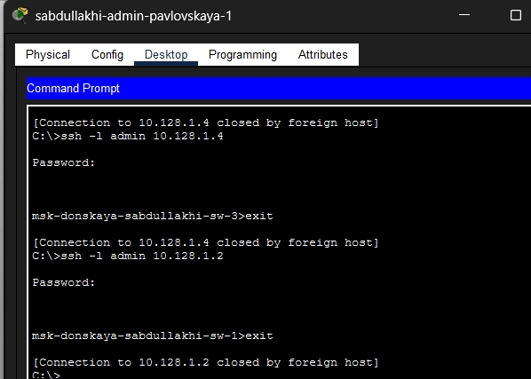
Проверка SSH-доступа
Просмотр итоговых списков
доступа
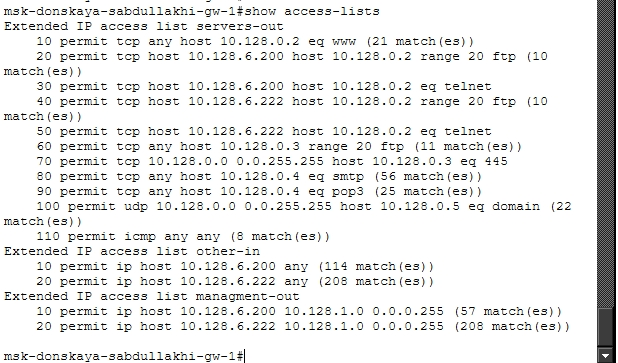
Просмотр итоговых списков
доступа
Вывод
В ходе работы настроены ACL на маршрутизаторе. Разрешён HTTP для
всех, FTP и Telnet — только для администратора (10.128.6.200). Добавлены
правила для файлового, почтового и DNS-серверов, а также разрешён ICMP
(ping). Администратор получил доступ к сети управления по SSH. Все
проверки успешны. Цель достигнута.